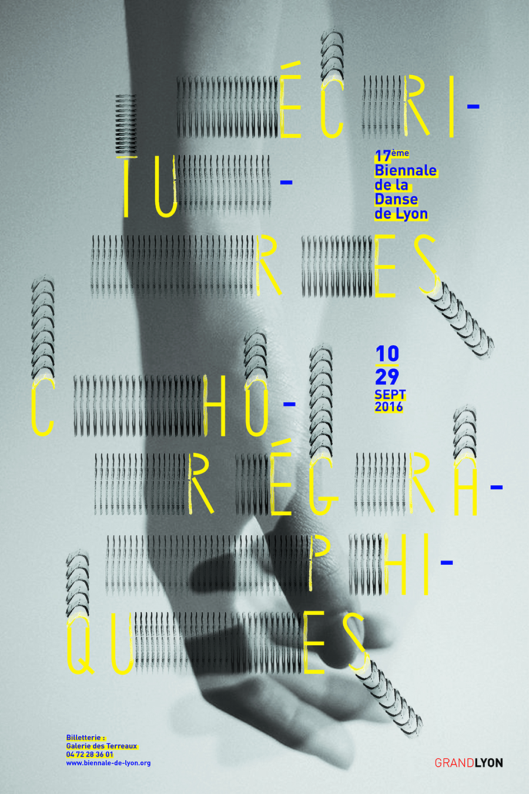
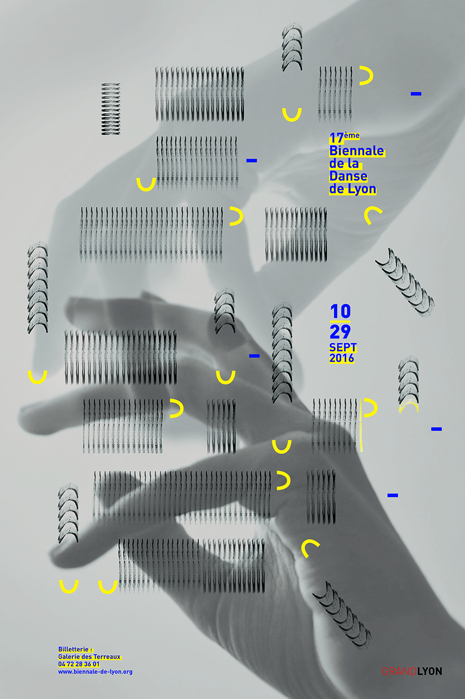
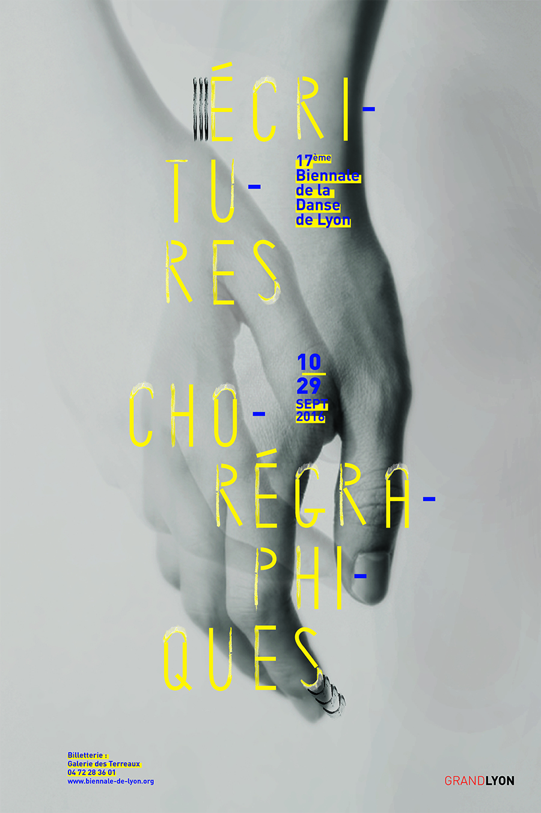

La danse contemporaine de Anne Térésa de Keersmaeker est composée d'un nombre de mouvements limités et constament réorganisés pour créer un rythme puissant.
Affiches à logotitre typographique évolutif et modulaire pour la Biennale de danse contemporaine de Lyon.
Janvier 2016


